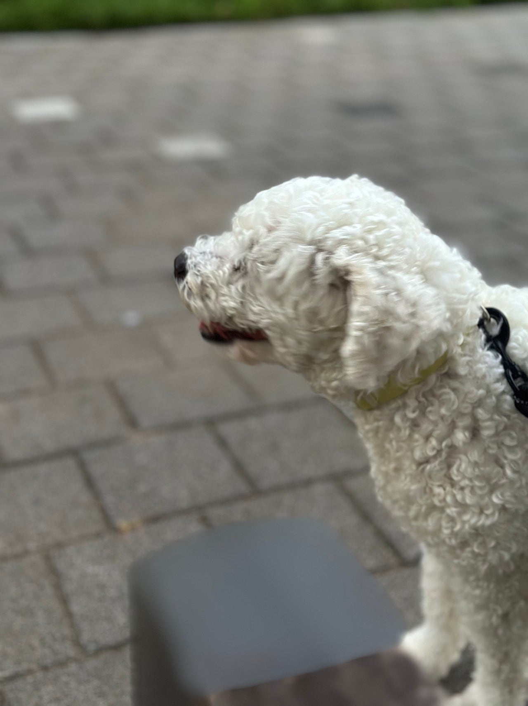
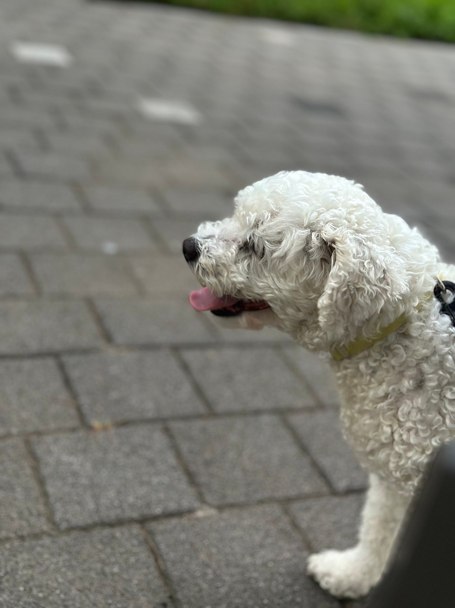
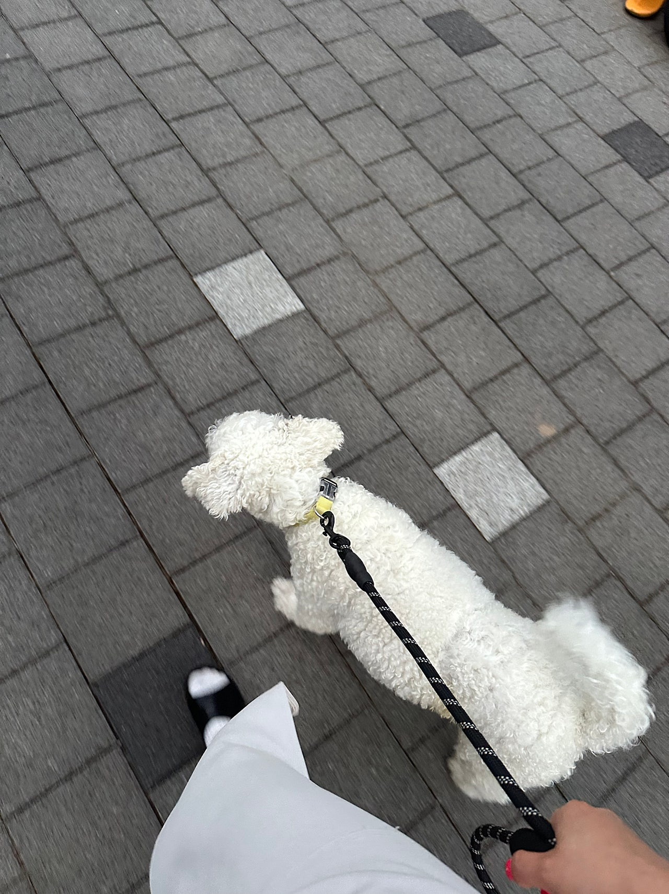
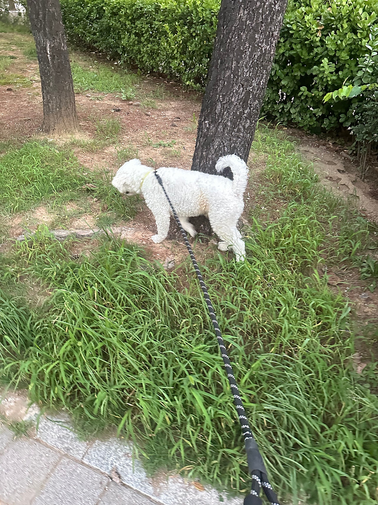
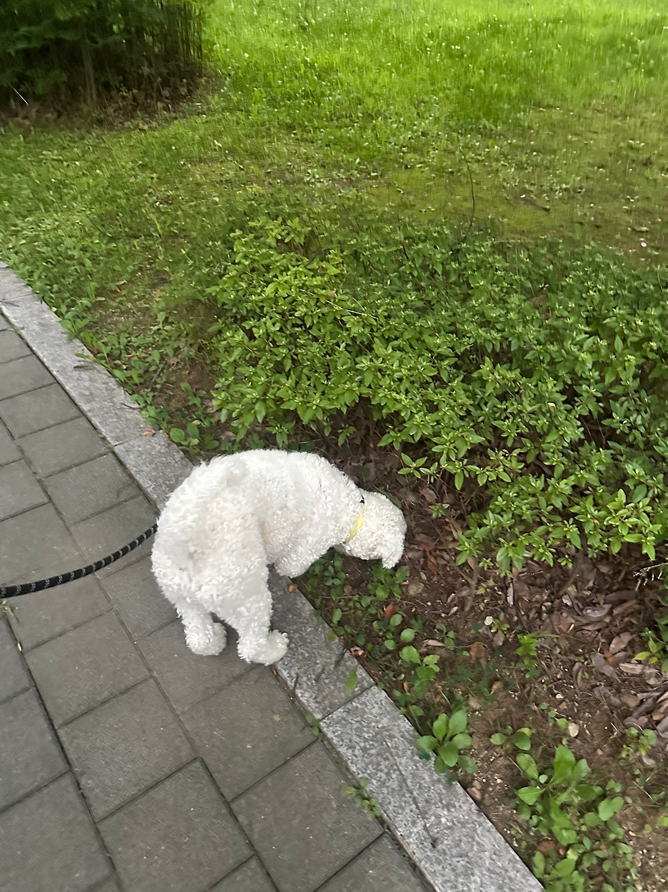
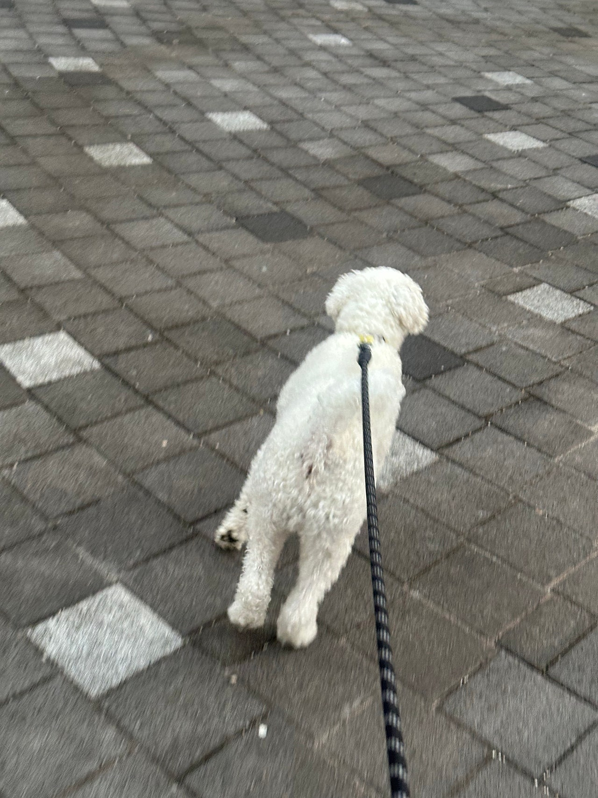

비숑믹스 하니의 산책일기


비숑 믹스 하니의 산책 일기!중형견정도 되는 사이즈를 가진 하니두툼한 몸매를 자랑하는,,ㅎㅎㅎ이름이랑 안어울리게 울 하니는 남자아이랍니다 ㅎㅎ기집애 이름을 가졌지만! 늠름한 남자라는!!요즘 날이 더 더워져서해가 좀 지면 산책을 해주고 있어요시원한 물과 배변봉투는 필수!!!뒷모습만 봐도 신난게 보이지 않나요?ㅋㅋㅋㅋㅋ길게는 아니더라도 이렇게 잠깐씩산책을 다녀오면 아이들이 너무 신나하는게 보여서안데리고 나갈수가 없어요아이들이 좋은 가족을 만날때까지아가펫스토리의 산책은 멈추지 않는닷!!!!!




0505-464-1004
댓글 23
길게는 아니어도 잠깐 나가면 아이들이 신난다는 이야기가 하니한테 맞아요.
좋은 가족만 만나자.
두툼하다고 해서 건강 이야기가 더 궁금해졌는데 글은 산책에 집중돼 있네요.
사랑받을 일만 남았으면 해요.
시원한 물 챙겨 나가는 장면이 상상돼요. 여름 산책 일기 맞아요.
가족 되는 날이 하루라도 빨리 오면 좋겠어요.
중형에 가까운 비숑 믹스라는 점, 입양 전에 알고 가면 좋겠어요.
댓글로나마 쓰다듬고 갑니다. 잘 자라.
이름이랑 달리 남자아이라는 반전이 글의 재미예요.
사진 보는 동안에도 좋은 가족이 생기길 빌었어요.
비숑 믹스 하니 일기, 사진과 체구 설명이 서로 맞아요.
하니, 아프지 말고 잘 자라.
비숑 믹스인데 앙증맞은 크기만은 아니라는 글이 정확해요.
외롭지 않게, 좋은 손에서 자라길.
하니, 이름값은 귀엽고 체구는 든든하네요.
하니도 아프지 말고 무럭무럭.
뒷모습 컷이 제일 하니답다고 글이 먼저 말해 줬어요.
뒷모습만 봐도 신난다는 말이 산책 사진이랑 딱이에요.
짧게라도 매일 나가는 산책이 하니한테는 큰일이겠어요.
하니 이름 듣고 작은 아이를 생각했는데, 글을 읽고 사진을 다시 봤어요.
해가 좀 진 뒤의 산책이라 표정도 여유로워 보여요.
더워서 해 지고 나서 산책하고, 물과 배변봉투가 필수라는 디테일이 좋아요.
기집애 이름에 늠름한 남자라는 문장에서 웃었어요.